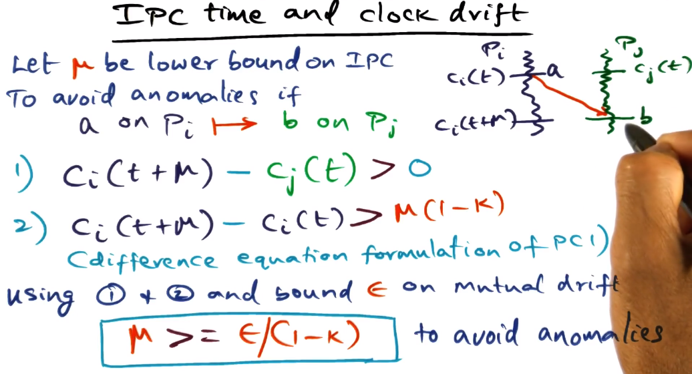

AOS Lecture Notes - Lesson 5 - Distributed Systems
Distributed Systems
Definitions
- What fundamentally distinguishes a distributed system from a parallel system is the degree of autonamy of the individual nodes of the system.
- Also the fact that the interconnection system between the nodes of a distributed system is wide open to the worlds, instead of being confined to a rack or something
- However, as hardware advances a lot of what have historically been “DS” problems are becoming relevant even at the single-chip level
3 Main Properties of a Distributed System
- A distributed system is a collection of nodes interconnected by a LAN or WAN
- The LAN or WAN may be implemented with a variety of hardware (fiber, cable, satellite)
- No physical memory shared between nodes of a distributed system.
- All communication must be done via messaging between nodes.
- Event computation time (time it takes on a single node to do some significant processing) is significantly less than the messaging time between nodes (Te « Tm)
- Lamport definition: A system is distributed if the message transmission time is not negligible to the time between events in a single process
- Interestingly, by this definition even a cluster is a distributed system (due to CPU speed being so good these days)
-
- This indicates that A happened before B
- This tells us that either A and B happened sequentially on the same process, or there is a communication event from A and B. Otherwise we would not know ordering and not be able to make this statement
-
- “Happened before” relationship is transitive
- “Concurrent” events are (basically) never actually at the exact same time, it’s just that we don’t have enough information to make a statement about which happened first based on the logic above
-
- Showing the logic for how to determine concurrent vs ordered events. Basically it reiterates above, about how we have ordering knowledge within a process, or if there are communication events between processes (which apply transitively when determining ordering). Anything where we don’t know gets lumped into “concurrent”, highlighted here with event M
Lamport Clocks
- What does each node know?
- Its own events
- Communication events
- Lamport’s Logical Clock
- Monotonic increase of own event times (increment amount does not matter)
- Condition 1: Ci(a) < Ci(b)
- Message receipt time greater than send time
- Condition 2: Ci(a) < Cj(d)
- Timestamps of concurrent events are arbitrary
- The above describes a “partial ordering” of events
- What to do if you need a total order?
- Lamport’s Total Order
- If there are two events, A and B, that are concurrent by the above definition, then you can use and arbitrary “well known” condition to break the tie
- The corrolary of this is that there is no single “total order” universally. It is a function of whatever condition you choose to break ties
- Once a total order is determined, the actual timestamps are no longer relevant. Only Lamport ordering actually matters for application logic
- Distributed M.E. Lock Algorithm

- Each node maintains a queue of requests for the lock
- Whenever a node wants the lock, adds it to its own queue and sends a request to all other nodes, which add the request to their queue. All such messages/queue entries include timestamp of the request.
- Every process orders their queue by lamport’s clock
- Ties broken by process ID
- Queues across processes may not match each other, due to travel time of messages
- Processes know that they have the lock if:
- Their own request is at the top of the queue (again, ordered by Lamport order with PID as tiebreaker)
- They have acks or later lock requests from all other nodes in the system
- Lock release:
- P1 removes its request from its own queue and sends unlock message to all other nodes
- When peers receive the unlock message, P1s request is removed from their queues
- Correctness is based on the following assumptions
- Messages arrive in order
- There is no message loss
- Queues are totally ordered => by Lamport’s logical clocks plus PID to break ties
- Message Complexity
- How many messages are exchanged among all the nodes for each lock acquisition followed by a lock release
- 3 * (N-1)
- N-1 Lock request messages
- N-1 Lock ack messages
- N-1 Unlock messages
- No acks due to above assumption that no messages are lost
- Can we do better? Yes.
- Defer acks if my req precedes yours
- Combining with unlock reduces to 2 * (N-1)
- Lamport’s Physical Clock
- How should we handle individual clock drift between nodes?
- Use arrows to indicate real time relationships (e.g. a->b means that a happened before b in terms of real time)
- Physical clock conditions
- PC1(bound on individual clock drift)
- individual drifts are small
- PC2 (bound on mutual drift)
- differences between the drifts of individual clocks will be small
- IPC time and clock drift
- To avoid anomalies:
- Disparity of mutual drift must not be longer than IPC time
- Amount of individual clock drift should be negligible compared to IPC time
Latency Limits
- Given that network communication is the limiting factor for performance in distributed systems, the OS must strive hard to reduce the latency incurred in the system software for networked services
- Latency == elapsed time
- Throughput == events per unit of time
- Bandwidth is a common measure of throughput
- RPC Performance
- RPC is the basis for client-server based distributed systems
- Two components to latency
- Hardware overhead
- Dependent on how the network is interfaced to the computer
- Moving the bits from the memory to the node to the network controller. Usually accomplished using direct memory access (DMA)
- There are some other types where the CPU steps in, too, but this is uncommon in modern systems
- Then out onto the wire, where network bandwidth comes into play
- 
- Software overhead
- What the OS tacks on to the hardware overhead
- Incurred to make message available in memory for transmission
- Latency as a whole is software + hardware overheads
- Focus of this lesson is how to reduce the software overhead to reduce latency
Components of RPC Latency
-
- Client call
- client has to set up arguments for procedure call, and trap into kernel
- kernel validates and then marshalls the arguments into a network packet.
- kernel sets up controller to do the network transaction.
- Controller latency
- Controller must DMA message into its buffer, and then put it out on the wire. Done in hardware.
- Time on wire
- Depends on distance between client and server and on bandwidth. Limiting factor is the speed of light.
- Interrupt handling
- Message arrives at destination node, as an interrupt. This must be handled by the OS.
- Move bits from wire to controller buffer to memory.
- Server setup to execute call
- Locate server procedure, dispatch server procedure, unmarshall network packet as arguments for call.
- Actually execute the call.
- Server execution and reply
- Not really under the control of the OS. Whatever the server does, it does.
- Controller latency again (omitted in numbering)
- Time on wire back (omitted in numbering)
- equivalent to step 3, travel time on network
- Interrupt handling again (omitted in numbering)
- equivalent to step 4
- Client setup to receive results and restart
- Dispatch client. This again is really not under the control of the OS, all about how the client is implemented and what it’s doing.
Sources of overhead in RPC
- Marshalling and data copying
- Marshalling refers to semantics of RPC call being made is something that the OS knows nothing about. Arguments actually passed have semantic meaning only between the client and server.
- Marshalling == accumulate all arguments from the call and make one contiguous network packet out of it.
- Biggest source of overhead in marshalling is copying. Copying happens 3 times.
- Client stub takes arguments of the call from the stack and convert into contiguous sequence of bytes called an RPC message.
- Client is a user program, so RPC message must be copied into a kernel buffer in kernel space.
- Now the data must be copied by network controller out onto the wire using DMA
- How can this be reduced?
- Third copy via DMA is a hardware action and therefore unavoidable (at least from our OS perspective)
- We could marshal into the kernel buffer directly, avoiding the second data copy
- This would require allowing the client stub to work directly with kernel memory.
- This means the stub would be installed directly inside the kernel at bind time. This is concerning, of course, as installing code into the kernel is a big risk.
- Alternatively, have a structured mechanism for communication between client stub and the kernel
- This might be a shared descriptor, where each entry is an argument for the rpc call.
- Kernel doesn’t need to know what each entry is, just starting position and length.
- Control transfer
- The context switches that have to happen in order to effect an RPC call and return
- Potentially 4 context switches
- client makes call out to network via kernel to request from server
- can be overlapped with network communication while rpc call is in transmission on the wire
- server makes call in from network via kernel to receive from client
- this is in critical path of latency
- server makes call out to network via kernel to respond to client
- can be overlapped with network communication while rpc call is in transmission on the wire
- client makes call back in from network via kernel to receive from kernel
- this is in critical path of latency
- Can latency be reduced down to 1 switch?
- First switch may be unnecessary if time of network transit and server process is very short, and so client box would only be blocked for a short time and does not need to be switched away from.
- Then the only context switch is on server (switch 2) and so there’s only one switch that actually affects latency of RPC call
- Protocol processing
- What transport should be used for RPC?
- Latency and reliability are competing priorities.
- If we are working on a LAN, then that is reliable so we should focus on reducing latency.
- Choices for reducing latency in transport
- No low-level ACKs
- messages not going to get lost on a LAN, presumably. Result itself can serve as an ACK
- Hardware checksum for packet integrity
- A message is unlikely to be corrupted on a LAN, so checksums will not be needed to confirm message validity. Save the time spent calculating and comparing checksums in software, the hardware checksums will be sufficient.
- No client side buffering since client is blocked
- Do not need to buffer message if on a reliable LAN, as retransmission due to message loss is unlikely. In case of message loss, can reconstruct and re-send the call.
- Overlap server-side buffering with result transmission
- As above, message loss is unlikely but possible, so buffering on server side to avoid needing to reproduce the result is still a worthwhile precaution (processing is far more expensive than constructing the call so the penalty for message loss on the server->client trip is higher).
- However, this can be done while message is in transit, overlapping to reduce latency.
- How to reduce kernel overhead
- “Take what hardware gives you” to reduce latency
Active Networks
- This section covers the idea of providing quality of service for network communication in an Operating System by making the network “active”
-
- Routers normally don’t inspect packet in any way. Just figure out the next hop to send the packet to, and do so.
- Done statically via table lookups
- So what does it mean to make a node “active”?
- Instead of the next hop being done viaa static table lookups, it should be dynamically determined by the router.
- This would allow each network to have its own flows, and to update those based on traffic or conditions.
- How should this be implemented?

- OS must provide QoS APIs to the application
- The application will provide hints that the OS will use in synthesizing code to give hints to the network on how to handle the packets
- This code will be added to the payload of the packets
- These changes are very difficult to actually implement in the protcol stacks of the OS
- Routers are not open, not all of them will be able to use the code in question
-
- Type field identifies code that must be executed to process capsule
- Prev field is the identity of the upstream node that successfully processed a capsule of this type
- Capsule does not contain the code, only a type that allows to identify the code needed
-
- Routing decisions can be made regardless of physical topology based on API
- Soft-store is where necessary code is stored, in key-value store
- Other things can be stored in soft-store too, as needed
- Can also query node, possibly about the network or the node itself
- ANTS == Active Node Transfer System
- Application level package
- Creates a capsule of ANTS header and payload
- Allows for both “normal” and “active” nodes to act upon the packet. This helps with “closed” router problem by keeping active nodes at only edges of the network
- Capsule Implementation
- Action taken on capsule arrival
- Type field: fingerprint for the capsule code
- Cryptographically strong hash
- Demand load capsule code from previous node by sending request
- If the node does not already have the code indicated by the type field from the node indicated by the prev node field
- The locality of capsule processing is very high, likely to process many of the same kind of capsule in close time proximity. Thus this will be a proportionally small expense
- Once gotten and hashed, store in soft-store for future use
- Drop capsule if code is not in soft-store or previous node
- Higher-level acks will indicate to source and cause a re-transmission
- This might happen because, for example, soft-store is limited and the relevant code may have been deleted from soft-store on previous node to make space
Potential Applications of Active Networks
- Protocol-independent multicast
- Reliable multicast
- Congestion notification
- Private IP (PIP)
- Anycasting
Pros and Cons of Active Networks
- Pros
- Flexibility from Application perspective
- Can ignore physical layout of the network
- Cons
- Protection threats => solutions
- ANTS runtime safety => Java sandboxing
- code spoofing => robust fingerprinting method
- soft-store integrity => restricted API
- Resource management threats => solutions
- Executing code at each node => restricted API
- Flooding the network => Internet already susceptible (though may exacerbate this issue)
Feasibility of Active Networks
- Router makers loath to opening up the network
- Only feasible at the edge of the network
- Software routing cannot match the performance of hardware routing
- Only feasible at the edge of the network
- Social and Psychological Objections
- Hard for user community to accept arbitrary code executing in the public routing fabric
- Active Networks were a bit ahead of their time and lacked a killer app. Modern cloud computing offers a better use case, and Software-Defined Networking has resurrected a lot of the ideas that Active Networking originally innovated.
Systems From Components
- VLSI technology uses component based approach to build large, complex hardware systems. Can we do the same for software?
- Instead of starting from a clean slate, re-use software components?
- Easier in a lot of ways, if possible. Lots of challenges, though, such as locality, redundancies, etc.
Design Framework
- Design cycle
- specify -> code -> optimize -> deploy
- Specify: IOA (IO Automata)
- c-like syntax
- composition operator
- allows expressing specification of entire subsystem to be built
- Code: ocaml
- object oriented
- also functional (no side effects)
- efficient code, similar to C
- important for systems programming, performance matters a lot.
- nice complemnet to IOA
- formal semantics available line up well
- Optimize: NuPrl
- Framework for automatic optimization of ocaml code
- output verified to be functionally equivalent to the original ocaml code
- There’s no easy (formal) way to show that the ocaml implementation is the same as the IOA specification
Implementing TCP/IP Stack Using Components
- Start with IOA Spec
- Abstract Spec
- Concrete Spec
- How to synthesize stack from concrete spec? Getting to an unoptimized ocaml implementation
- Ensemble suite of microprotocols
- flow control, sliding window, encryption, scatter/gather, etc
- well-defined interfaces allowing composition
- This allows flexibility and customization, and a component-based design
- Needed protocols are selected using a heuristic and the provided behavior spec. This results in a functional but unoptimized protocol stack
- Layering could lead to inefficiences. This is where the analogy to VSLI component-based design breaks down for software
- Optimizing
- Several sources of optimization are available
- Use explicit memory management instead of implicit garbage collection in ocaml
- Avoid marshaling/unmarshaling across layers
- Buffering in parallel with transmission
- Header compression
- Layers may each get their own headers with lots of shared fields that could be compressed into single representations
- Locality enhancement for common code sequences
- colocate code paths common across layers to improve cache hit rate
- But manually doing all this would be very tedious. How to automate?
- NuPrl to the rescue!
- Static optimization
- NuPrl expert and an ocaml expert sit together and work layer by layer through the protocol stack to use the above optimizations
- Within each layer, not across layers at this stage.
- Only a semi-automatic process
- Dynamic optimizationm
- Collapse layers
- Uses the theorem-proving framework
- Identifies common work happening in multiple layers
- completely automatic
- Generate bypass code if common case predicate (ccp) satisfied
- CCP is basically how the protocol is supposed to react to any given event
- Theorem prover framework can automatically prove that the bypass code creates the equivalent result as all the layers being bypassed would have. This means we get the same result but much faster.
- Final step – convert back to ocaml
- Theorem prover framework can show that original and optimized ocaml code are equivalent, automatically
- Again, though, this says nothing about verification of the code against the original IOA specs